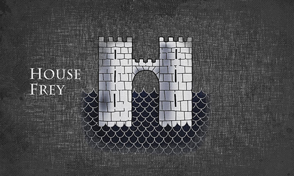
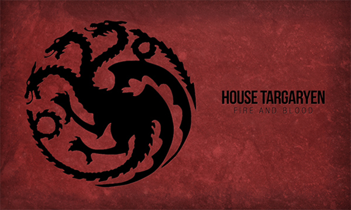
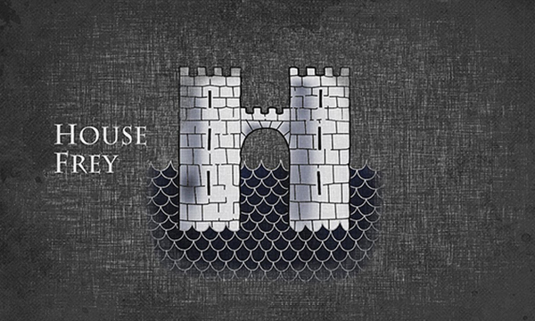
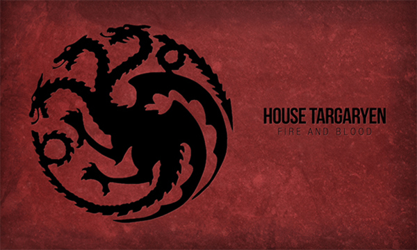

House Stark of Winterfell is a Great House of Westeros, ruling over the vast region known as the North from their seat in Winterfell. It is one of the oldest lines of Westerosi nobility by far, claiming a line of descent stretching back over eight thousand years. Before the Targaryen conquest, as well as during the War of the Five Kings and Daenerys Targaryen's invasion of Westeros, the leaders of House Stark ruled over the region as the Kings in the North.
House Lannister of Casterly Rock is one of the Great Houses of Westeros, one of its richest and most powerful families and oldest dynasties. It is also the current royal house of the Seven Kingdoms following the extinction of House Baratheon of King's Landing, which had been their puppet house anyway. The Lannisters rule over the Westerlands. Their seat is Casterly Rock, a massive rocky promontory overlooking the Sunset Sea which has had habitations and fortifications built into it over the millennia. They are the Lords Paramount of the Westerlands and Wardens of the West. As the new royal house, they also rule directly over the Crownlands from their seat of the Red Keep in King's Landing, the traditional seat of the royal family.
House Tully of Riverrun is an exiled Great House of Westeros. Its most senior member carried the title of Lord of Riverrun and Lord Paramount of the Trident, until the Red Wedding. The current head is Lord Edmure Tully, son of the late Hoster Tully. The Tully sigil is a silver trout on a red and blue background. Their house words are "Family, Duty, Honor."
House Greyjoy of Pyke is one of the Great Houses of Westeros. It rules over the Iron Islands, a harsh and bleak collection of islands off the west coast of Westeros, from the castle at Pyke. The head of the house is the Lord Reaper of Pyke. House Greyjoy's sigil is traditionally a golden kraken on a black field. Their house words are "We Do Not Sow," although the phrase "What Is Dead May Never Die" is also closely associated with House Greyjoy and their bannermen, as they are associated with the faith of the Drowned God.
House Arryn of the Eyrie is one of the Great Houses of Westeros. It has ruled over the Vale of Arryn for millennia, originally as the Kings of Mountain and Vale and more recently as Lords Paramount of the Vale and Wardens of the East under the Targaryen kings and Baratheon-Lannister kings. The nominal head of House Arryn is Robin Arryn, the Lord of the Eyrie, with his stepfather Petyr Baelish acting as Lord Protector until he reaches the age of majority.
House Frey of the Twins was the Great House of the Riverlands, having gained their position for their treachery against their former liege lords, House Tully, who were stripped of all their lands and titles for their rebellion against the Iron Throne; House Tully had supported the independence movement for the Kingdom of the North. The current head of the house is unknown following the assassinations of Lord Walder Frey and two of his sons, Lothar Frey and Walder Rivers, by the vengeful Arya Stark. This is made more complex by the subsequent assassination of all the male Freys soon after.
House Targaryen of Dragonstone is a Great House of Westeros and was the ruling royal House of the Seven Kingdoms for three centuries since it conquered and unified the realm, before it was deposed during Robert's Rebellion and House Baratheon replaced it as the new royal House. The few surviving Targaryens fled into exile to the Free Cities of Essos across the Narrow Sea. Currently based on Dragonstone off of the eastern coast of Westeros, House Targaryen seeks to retake the Seven Kingdoms from House Lannister, who formally replaced House Baratheon as the royal House following the destruction of the Great Sept of Baelor.